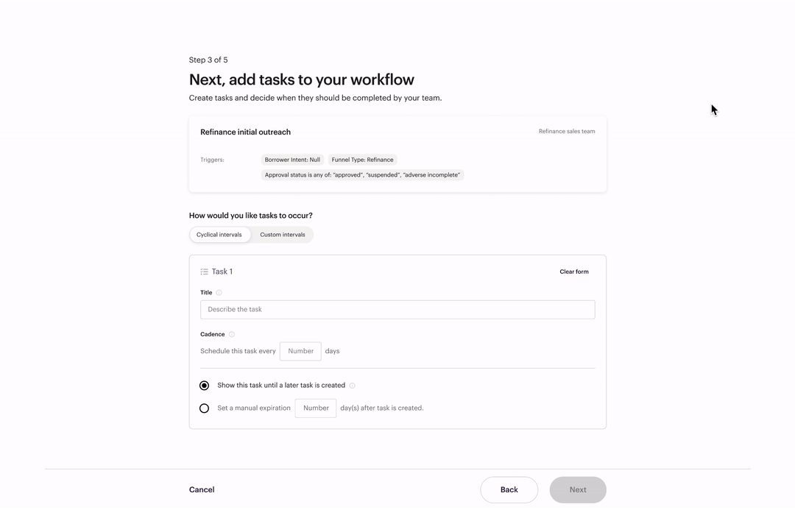

Workflow Studio
Taskifying mortgage work by turning a complicated and ambiguous process into an information assembly line.


Research & Opportunity
A basic home purchase loan process looks something like this

It's a complicated process with lots of edge cases and pain points...
Here are some patterns we noticed:
Scattered - Information needed to complete mortgage related work is generally scattered across different forms & products - requiring lots of manual digging & confirming
Expert required- Mortgage work generally require specialized(expensive) workers because the information needed to do work is ambiguous and hard to find.
Long process- Every loan requires multiple rounds careful combing through borrower information to ensure the information is accurate and the thresholds are met.
Exploring directions

We kicked off the project with cross functions leads, created, consolidated, & reconciled ideas guided by user testing with prototypes and peer feedback.

After testing successfully on a general design direction, we started working out the different states & flows to address all of the likely scenarios in our MVP use case.
Results



The workflow is then reviewed and published.
Tasklist

Workflow Builder and Tasklist allowed managers to track and continuously optimize their workflow strategies.
Early MVP results showed complex task completion time improve an average of 6.2% (From 57 to 53.5 hours including time in queue).